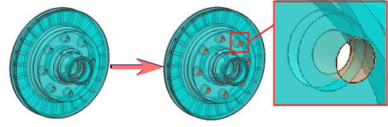

The options for selecting geometry that are available in the Methods list depend on the command that you are using. For example, if you choose the Hydrostatic Pressure command, the options for faces are listed.
The geometry selection method options include the following:
|

|